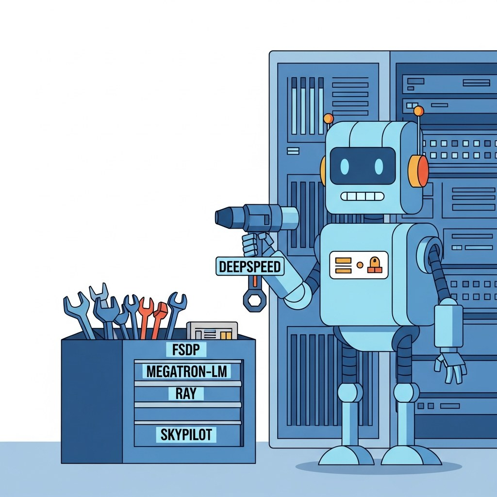

Big Picture
The systems-at-scale ecosystem includes orchestration platforms (Slurm, Ray, Kubeflow), distributed training frameworks (Megatron, DeepSpeed, FSDP, Colossal-AI), profiling tools (Nsight, PyTorch Profiler), and the cluster-management surface. This chapter is the practical reference.
Sections in This Chapter
- 61.1 Platforms Hyperscaler clouds (AWS SageMaker HyperPod, GCP Vertex / TPU, Azure ML, OCI), specialized GPU clouds (CoreWeave, Lambda, RunPod, Modal, Together, Fly.io, Cloudflare AI), HPC schedulers (Slurm, Volcano, KubeRay, Kubeflow, Argo), parallel storage (Lustre, GPFS, Weka, BeeGFS, FSx), and training observability (W&B, MLflow, Comet, Aim).
- 61.2 Libraries and Frameworks Distributed training foundations (Megatron-LM, DeepSpeed, PyTorch FSDP2, Colossal-AI, Accelerate), high-level recipes (torchtitan, Levanter, Axolotl, LLaMA-Factory, TRL), optimization kernels (Flash Attention 2/3, xformers, bitsandbytes, Transformer Engine), communication (NCCL, NVSHMEM, MSCCL), orchestration (Ray Train, SkyPilot, Composer, Flyte), and compilers (torch.compile, Triton, TensorRT-LLM).
- 61.3 Datasets and Benchmarks Pretraining corpora (FineWeb, FineWeb-Edu, RedPajama-v2, The Pile, C4 / mC4, CulturaX, The Stack v2), instruction and alignment data (UltraFeedback, OASST, FLAN, OpenHermes, SmolTalk), multimodal corpora (LAION-5B, DataComp, OBELICS), training-system benchmarks (MLPerf Training, NCCL Tests), evaluation harnesses (lm-eval-harness, HELM), and compute profilers.
- 61.4 Models Open-weight dense bases (Llama-3.1 / 3.2 / 4, Mistral Large 2, Qwen2.5 / 3, Yi-Large, Falcon, DBRX, Gemma), MoE checkpoints (DeepSeek-V3 / R1, Mixtral 8x22B, Snowflake Arctic, Llama-4 Scout / Maverick, Grok), long-context models (Gemini 2.5, Claude 4.5, Yi-1.5 200K), distillation-target small models (Llama-3.2 1B / 3B, Phi-3.5, Gemma-2 2B, SmolLM2), and the proprietary frontier.
- 61.5 External Reading and Communities Systems venues (SC, ISC, MLSys, OSDI, SOSP, NSDI), the 20-paper canon (Megatron-LM, DeepSpeed ZeRO, Flash Attention, GShard, Pathways, Llama-3 herd, DeepSeek-V3, OPT-175B logbook, BLOOM), engineering blogs (Hugging Face, PyTorch, DeepSpeed, Yi Tay, Interconnects), communities (r/LocalLLaMA, EleutherAI Discord, MLCommons), newsletters, and a weekly reading cadence.
What's Next?
This chapter begins with Section 61.1: Platforms. Each section builds on the previous one, so we recommend reading them in order.